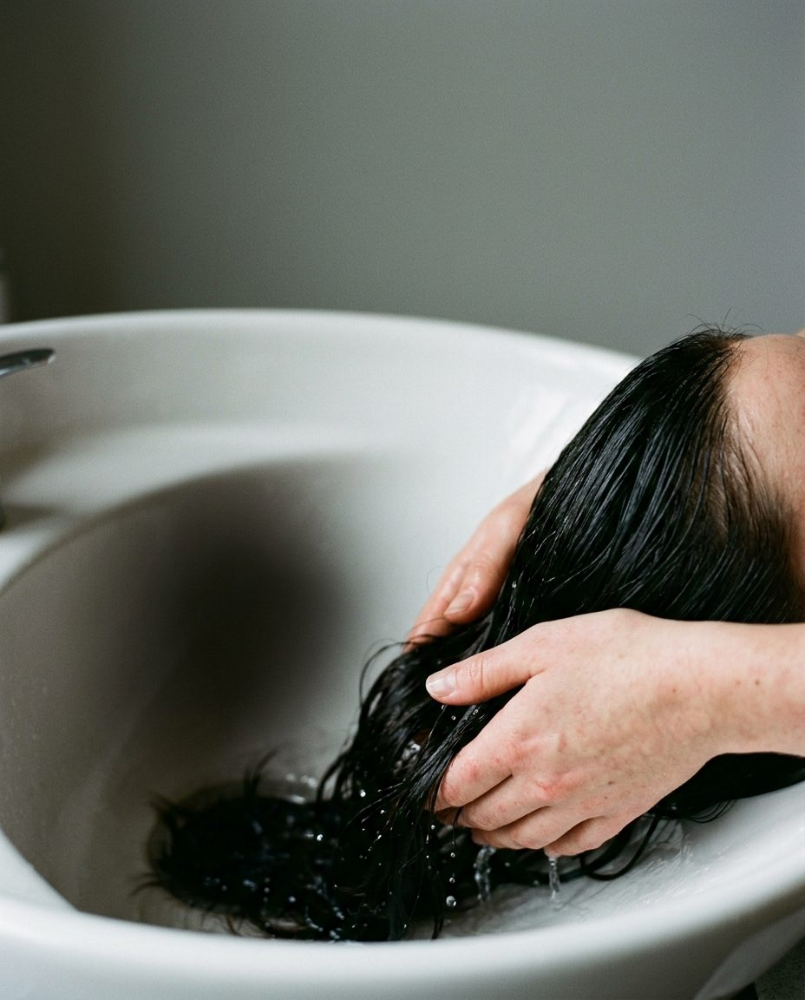

L’acqua calda apre la cuticola e il colore scivola via. Le prime 48 ore non lavare i capelli.
Poi shampoo senza solfati, risciacquo freddo alla fine e una maschera una volta a settimana.
Salone Maria